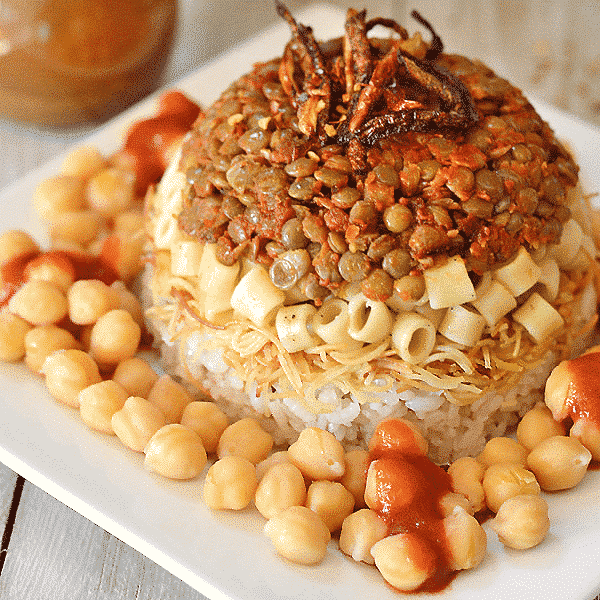

koshri

Description
Koshary, kushari or koshari is Egypt's national dish and a widely popular street food.
A traditional Egyptian staple, mixing pasta, rice and brown lentils, and topped with a zesty tomato sauce,
garlic vinegar and garnished with chickpeas and crispy fried onions.
ingredients
- rice
- lentils
- macaroni
- tomato sauce
- vegetable oil
- onions
- cumin
- coriander
recipe
- Make the crispy onion topping.
- Make the Tomato Sauce.
- Cook the lentils
- Drain the rice from its soaking water.
- luff the rice and lentils with a fork and transfer to a serving platte